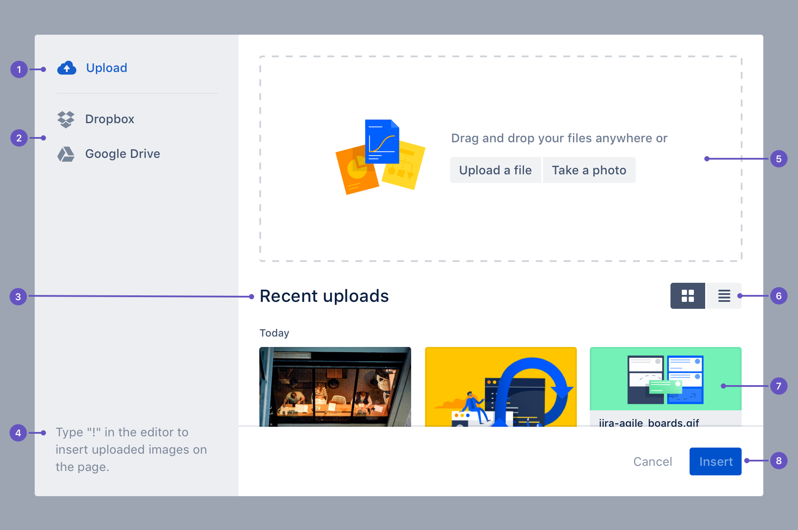
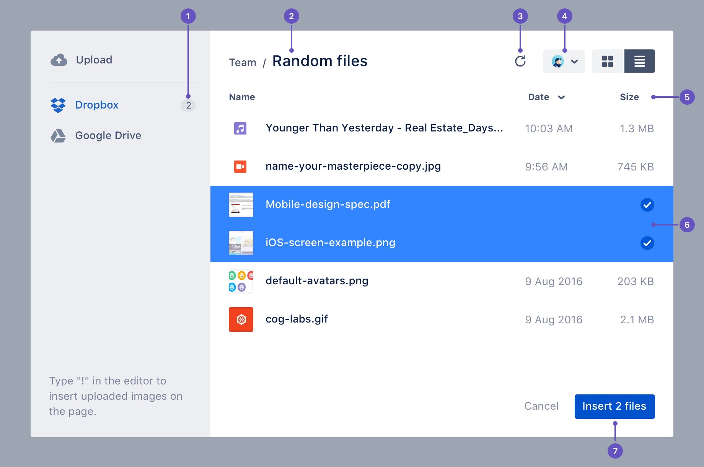

Media picker
The media picker provides a simple way to select and add files to applications.
When designing, we try to encourage users to drag and drop directly into the application, but we also provide the media picker to upload content from their desktop or other storage service. The media picker also displays recently uploaded files, and provides functionality for uploading new files from a local device or third party file storage.
- Upload: Add new files and view recently uploaded files.
- Integrations: Select and upload from an integrated application.
- Body title: Contains the title and provides access to further information.
- Hint text: Add helpful actions or information to guide the user.
- Upload area: Add files by drag and drop, uploading, or taking a photo.
- File view switcher: Alternate between grid or list view.
- Thumbnail card: Displays a preview of the file (if available) and the file name when in grid view.
- Actions: Actions consist of a primary 'Insert' button and a subtle 'Cancel' button. The primary button should always be labelled 'Insert' or 'Insert X files' (if more than one file is selected), where 'X' is the number of files.
Integrations
The media picker integrates with popular third party media storage services which are displayed in the left hand navigation. When an account is connected, those files are available to be selected and uploaded via the media picker.
Select with single option
- Selected files:A badge appears next to the upload navigation item to indicate how many files are selected for upload. Find out more about the badge component.
- Breadcrumbs:The enlarged heading indicates the current folder. Users can also navigate back through the folder structure.
- Refresh:Refreshes the content. Useful to get updates in case any changes have occurred in the third party service since the list was initially loaded.
- Settings:Dialog for integration settings and can include selected accounts, un-linking accounts, or adding multiple accounts.
- Table header:Identifies the table's contents and allows table sorting.
- Selected files:Highlights to show which files are selected for upload.
- Actions:Actions consist of a primary 'insert' and a subtle 'cancel' button. The primary button should always be labelled 'Insert' or 'Insert X files' (if more than one file is selected), where 'X' is the number of files.
Powered by a free JigsawOffice license. Please consider purchasing it today